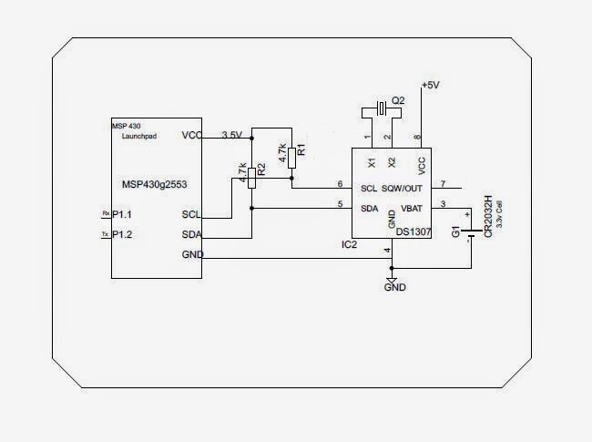

#include "Wire.h" //for DS1307 I2C #include <string.h> #include <math.h> #include <LiquidCrystal.h> // initialize the library with the numbers of the interface pins LiquidCrystal lcd(P2_0, P2_1, P2_2, P2_3, P2_4, P2_5); #define DS1307_I2C_ADDRESS 0x68 #define boton P1_3 boolean estado_boton; char txt2stream[17]; byte second, minute, hour, dayOfWeek, dayOfMonth, month, year; char buffer_fecha[12]; char buffer_hora[12]; void setup() { pinMode(P1_3, INPUT); // set up the LCD's number of columns and rows: lcd.begin(16, 2); lcd.setCursor(5,0); sprintf(txt2stream,"Nombre"); lcd.print(txt2stream); lcd.setCursor(4,1); sprintf(txt2stream,"Proyecto"); lcd.print(txt2stream); delay(1500); lcd.clear(); lcd.setCursor(2,1); sprintf(txt2stream,"Ficha:xxxxxxx"); lcd.print(txt2stream); lcd.setCursor(2,1); sprintf(txt2stream,"Sena Reg. Caldas"); lcd.print(txt2stream); delay(1500); lcd.clear(); Wire.begin(); /* //////here programmer set the current time ,from where the ds runs */ dayOfWeek = 5; dayOfMonth = 8; month = 3; year = 17; hour = 1; minute = 1; second = 40; setDateDs1307(second, minute, hour, dayOfWeek, dayOfMonth, month, year); } void loop() { // Escribir código de la aplicación estado_boton = !digitalRead(boton); if (estado_boton==1) { while (estado_boton==1) { leer_fecha_y_hora(); delay(1000); estado_boton = digitalRead(boton); } lcd.clear(); } } void leer_fecha_y_hora() { getDateDs1307(&second, &minute, &hour, &dayOfWeek, &dayOfMonth, &month, &year);///to get current time from ds1307 sprintf(buffer_fecha, "%02d/%02d/20%02d ", dayOfMonth, month, year); sprintf(buffer_hora, "%02d:%02d:%02d", hour, minute, second); lcd.setCursor(0, 0); lcd.print(buffer_fecha); lcd.setCursor(0, 1); lcd.print(buffer_hora); } void getDateDs1307(byte *second, // Gets the date and time from the ds1307 byte *minute, byte *hour, byte *dayOfWeek, byte *dayOfMonth, byte *month, byte *year) { // Reset the register pointer Wire.beginTransmission(DS1307_I2C_ADDRESS); Wire.write(0); Wire.endTransmission(); Wire.requestFrom(DS1307_I2C_ADDRESS, 7); // A few of these need masks because certain bits are control bits *second = bcdToDec(Wire.read() & 0x7f); *minute = bcdToDec(Wire.read()); *hour = bcdToDec(Wire.read() & 0x3f); // Need to change this if 12 hour am/pm *dayOfWeek = bcdToDec(Wire.read()); *dayOfMonth = bcdToDec(Wire.read()); *month = bcdToDec(Wire.read()); *year = bcdToDec(Wire.read()); } void setDateDs1307(byte second, // 0-59 ///to set time in ds1307 byte minute, // 0-59 byte hour, // 1-23 byte dayOfWeek, // 1-7 byte dayOfMonth, // 1-28/29/30/31 byte month, // 1-12 byte year) // 0-99 { Wire.beginTransmission(DS1307_I2C_ADDRESS); Wire.write(0); Wire.write(decToBcd(second)); // 0 to bit 7 starts the clock Wire.write(decToBcd(minute)); Wire.write(decToBcd(hour)); // If you want 12 hour am/pm you need to set // bit 6 (also need to change readDateDs1307) Wire.write(decToBcd(dayOfWeek)); Wire.write(decToBcd(dayOfMonth)); Wire.write(decToBcd(month)); Wire.write(decToBcd(year)); Wire.endTransmission(); } // Convert normal decimal numbers to binary coded decimal byte decToBcd(byte val) { return ( (val/10*16) + (val%10) ); } // Convert binary coded decimal to normal decimal numbers byte bcdToDec(byte val) { return ( (val/16*10) + (val%16) ); }